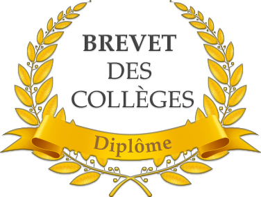

Le brevet des collèges, année 2017-2018

Source: https://pablo-picasso.ecollege.haute-garonne.fr
Je possède le PSC1
J'ai reçu l'ASSR après un concours passé bien évidemment très sérieusement avec la note de 11/20
Je passe actuellement le bac général session 2021, suivant les spécialités mathématiques-Physique chimie-Numériques et sciences informatiques
Je suis, officieusement, attesté par Mr Musk comme ingénieur en chef de la marque de voiture Tesla